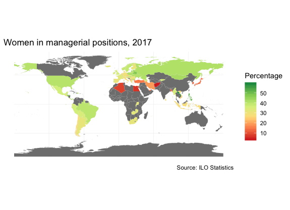
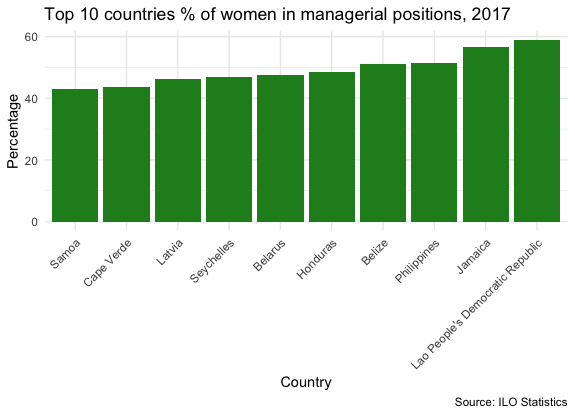
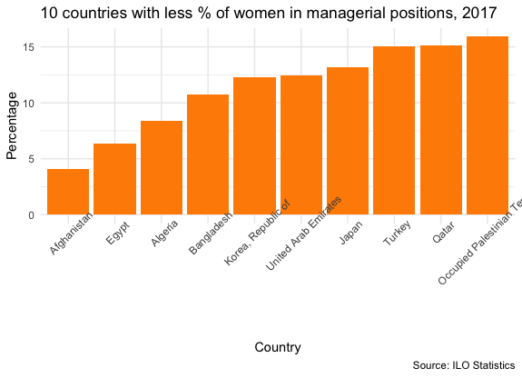
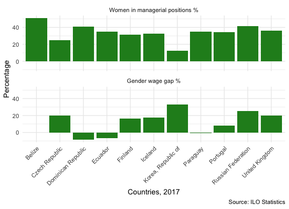

The world in 2017
In 2017, the world’s average percentage of women in managerial position was 32.5%. The country leading in this indicator is Laos with 59%, while Afghanistan is at the bottom of the list with only 4%.
  Gender gap is defined as the average difference between the remuneration for all working men and women in a chosen sample. In the available data from 2017, we can see that there’s no wage gap in Belize (0%). In Dominican Republic (-8.75%), Ecuador (-6.46%) and Paraguay (-0.70%), the negative number indicates that women earn more than men. And North Korea presents the highest gap, where men earn in average 33% more than women.
We can see that in the countries with small and negative gaps such as Belize, Dominican Republic, Ecuador and Paraguay there are higher percentages of women in managerial positions.
Not only are they closing the wage gap, they are also promoting women to managerial positions, like in Belize, where there’s 0% wage gap and 51% of women hold high positions.
On the contrary, in North Korea, where the wage gap is 33%, it’s no surprise there’s a low percentage of women in high positions, only 12%.
